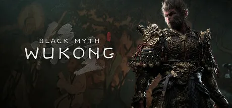

Black Myth: Wukong is an upcoming action role-playing game developed by Chinese game studio Game Science. The game is based on the classic Chinese novel "Journey to the West" and follows the story of the Monkey King, Sun Wukong, as he battles demons and other mythical creatures in a fantastical world. The game features fast-paced combat, exploration, and a variety of abilities and weapons that players can use to defeat enemies. Black Myth: Wukong has been praised for its stunning graphics, immersive world design, and engaging gameplay mechanics. The game is set to be released on multiple platforms, including PC and consoles, and has generated significant anticipation among fans of action RPGs and Chinese mythology.